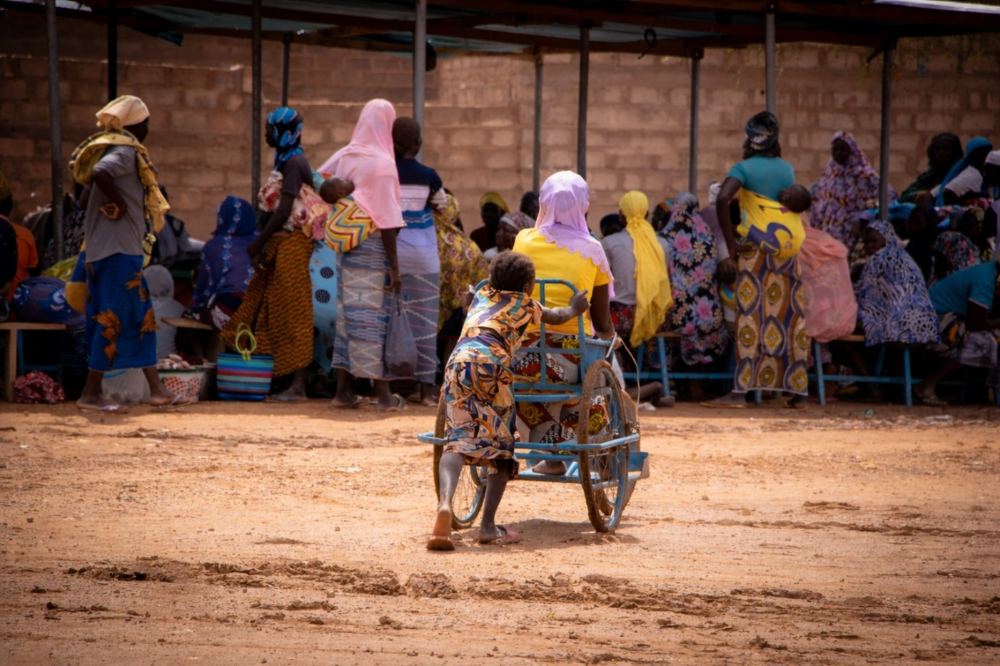
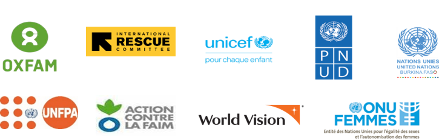
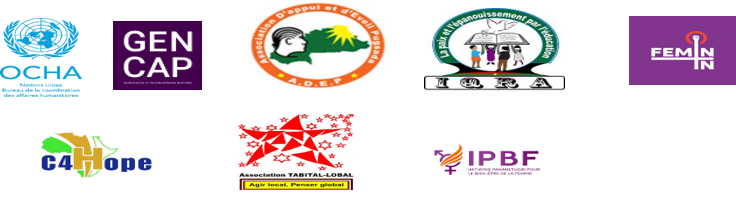

Analyser les dynamiques
Rôles, responsabilités, accès aux ressources et évolution avec la crise.

Burkina Faso · Mars 2026
Une plateforme interactive pour comprendre les vulnérabilités différenciées, orienter la décision et renforcer une action humanitaire sensible et transformatrice en matière de genre.
Kaya, région des Koulsé · Photo : UNOCHA / Alassane SARR
Contexte et finalité
Le Burkina Faso traverse une crise sécuritaire et humanitaire complexe et prolongée. Les déplacements, l’insécurité, la dégradation des moyens de subsistance et les barrières d’accès aux services essentiels affectent différemment les femmes, les hommes, les filles, les garçons et les personnes vivant avec un handicap.
L’analyse adopte une approche intersectionnelle afin de mettre en évidence les cumuls de vulnérabilités et de produire des recommandations utiles à la planification, au ciblage, à la coordination, au financement et au suivi de la réponse humanitaire.
Rôles, responsabilités, accès aux ressources et évolution avec la crise.
Accès aux services, protection, participation, information et assistance.
Sexe, âge, handicap, statut de déplacement et territoire.
Priorités programmatiques, financement, coordination et redevabilité.
Méthodologie
La collecte a combiné questionnaires individuels, consultations en ligne, entretiens semi-structurés, groupes de discussion et revue documentaire. Elle a respecté les principes de consentement éclairé, de confidentialité, d’anonymisation, de prévention des VBG et de protection contre l’exploitation et les abus sexuels.
Résultats clés
Organisations dirigées par des femmes
La cartographie interactive des ODF permet d’explorer leur présence territoriale, leurs secteurs d’intervention, leurs populations cibles, leurs capacités institutionnelles, leurs partenariats et leur accès au financement.
Elle permet également d’identifier les zones insuffisamment couvertes, les territoires où les besoins sont élevés et les organisations nécessitant un appui technique ou financier prioritaire.
Accéder à la cartographie des ODFPartenaires


Priorités d’action
Soutenir des programmes qui réduisent les inégalités structurelles et la charge de travail non rémunérée.
Prioriser les zones où se cumulent déplacement, pauvreté, handicap, mariage des enfants et exclusion des services.
Mettre en place des financements directs, flexibles et pluriannuels, avec un accompagnement adapté.
Mesurer l’influence réelle des femmes et des groupes vulnérables dans les décisions.
Institutionnaliser les données désagrégées et leur utilisation dans la planification et le suivi.
Déployer des mécanismes sûrs, accessibles, confidentiels et adaptés au genre et au handicap.
Les opinions exprimées dans cette analyse conjointe genre sont celles des auteur·e·s et ne reflètent pas nécessairement celles des organisations commanditaires, de leurs programmes ou de tout autre partenaire.
Kaya, région des Koulsé, Burkina Faso. Personnes handicapées et personnes déplacées participant à des sessions de causeries organisées pour les femmes déplacées et hôtes dans un espace sûr. Photo : UNOCHA / Alassane SARR.